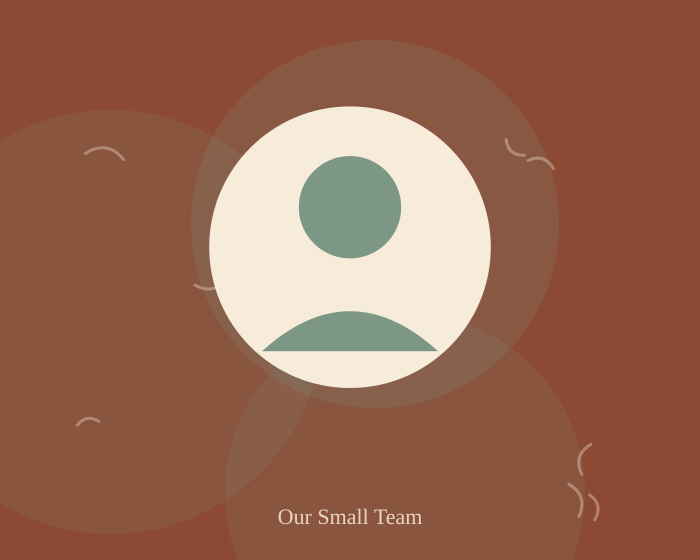

Our story
We just wanted a sock that lasted the winter
FuzzyStocking started in a single New York apartment with a box of sample yarn and a genuine complaint: most socks go thin at the heel long before the rest of the pair wears out.
How we started
A drawer full of disappointing socks
Before FuzzyStocking existed, our founder kept a small, informal graveyard of socks that had worn through at the heel within a season. After the third replacement order to yet another big-box brand, the question became simple: what would it take to knit one that actually held up?
The answer turned out to be less about clever marketing and more about unglamorous things — yarn weight, reinforced stitching at the exact spot where a heel lands, and a willingness to keep runs small enough that someone could actually check each batch by hand.
How we work today
Small runs, real feedback loops
Every FuzzyStocking style starts as a short test run of a few hundred pairs. We send early pairs to a small group of regular customers, ask them to wear them into the ground, and only scale a style up once it survives that stretch test.
- New styles are worn and washed repeatedly before a full production run.
- Yarn is sourced from mills we've visited and can trace back to a specific lot.
- Every batch gets a manual spot-check for seam quality before packing.

What we care about
Three things that don't change as we grow
Comfort over trend
If a pattern looks great but bunches at the arch, it doesn't ship. Fit is checked before print.
Honest materials
We list what's actually in the yarn blend on every product page, not just a marketing summary.
Small-batch accountability
Short runs mean a real person is responsible for the quality of what ships this week.
Curious how they're actually made?
Read about our knitting process and the fibers we use, or just skip ahead and shop the current lineup.